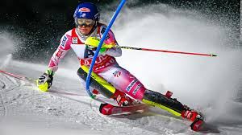
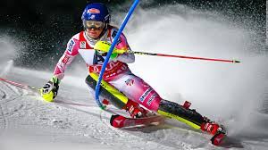

I'm sure I can speak for many fellow ski racers when I say that I love it because of the community! No matter if you have been skiing for one year or 10, you will always be welcomed with open arms and a big plate of food prepared by the collection of ski moms.
I also love that the sport of ski racing is ever-changing, you never ski the same course twice!
 
